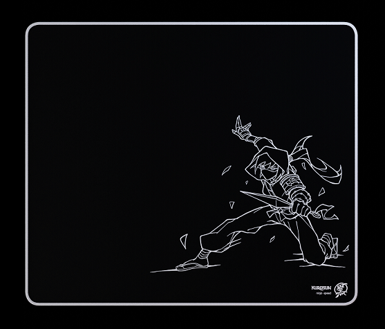

Polyester fabric a durable fabric that's resistant to humidity & temperature changes. The edge stitching is carefully stitched around the edges to prevent fraying. It is kept on an even level with the surface so it stays out of the way of your mouse and doesn't bother your arm. The base is a newly developed material that offers higher quality than typical rubber, allowing for a firm, relatively thin base that lays completely flat and grips your desk.
Ninja.
Built from the ground up for speed. Experience a smooth glide for effortless swipes while maintaining complete control over your movements. Ultra-fine woven cloth gives you all-day comfort. Beautifully designed to fit any setup. Hi performance, meet good looks


Performance or style?
Both.
Every part of Ninja was carefully crafted with passion.
Gaming-grade surface texture offers high tracking precision that accurately translates every movement of your mouse. Ink printing ensures the sharpest visuals without getting in the way of your glide.
No stone left unturned means you can count on it when it matters most - without sacrificing aesthetics.
Unparalleled comfort.
Consistently unparalleled.
A mousepad is at its best when you don’t even notice it’s there.
Flat edge stitching, a cloud-like surface, and a firm yet supportive base that grips your desk
- all coming together to let you focus on doing what you do best, without compromises.
About
Kurosun is dedicated to making premium, high-performance products with elegant designs that fit any setup. Japanese-inspired visuals accompany innovative ideas to ensure a unique experience, with uncompromising passion being at the forefront of everything we do.
The founding members of Kurosun are avid gamers and artists with a love for technology and esports. This combined experience was utilized to craft our products piece by piece - not letting any detail slip by. We were set on creating something we’d be exceptionally proud of, because “Pursue Perfection” is more than a slogan to us - it’s how we operate.
We didn’t want to stop at creating great products, though. Making sure others enjoyed them as much as we did meant we had to think outside the box. We wanted you to feel the care and thoughtful touches that we’ve put into every piece. We really believe that aesthetics don’t have to come at the cost of performance, and that philosophy will always be at the root of everything we do.
So go on, pursue perfection.
Sincerely,
Kurosun Team
FAQ & Return Policy
No, the entire surface of the mousepad is ink-printed to ensure the highest quality and consistency.
All products are designed in the USA, and made in Taiwan.
Do not fold the mousepad, this can cause the surface to crease. Do not use a washing machine or detergent. To clean it, use a damp washcloth or a microfiber cloth. Wipe in a circular motion. Dry with a towel or washcloth, and then let air dry for 20 minutes. Repeat as needed. Do not use your nails or a brush, as those can damage the surface.
Eventually, yes. The pad has a “break-in” period and after about 50-75 hours of use it will reach its intended speed. With proper care, it will maintain this glide for a long time. This process is normal. Our mousepads are lab-tested to make sure they meet our standards. Ninja was tested for over 200km (124 freedom miles) of use with simulated gamer sweat. Yes, we're serious.
Yes, all of our mousepads ship in flat packaging to ensure they lay flat out of the box without curling up.
Yes. The Ninja is the first in our original series of mousepads.
Yes, more information will come at a later date. Follow our socials to stay up-to-date.
We ship to as many countries as possible. If you can't find your country on the list, we sadly can not ship it to you. Check back as we will constantly be adding more countries.
We work with Shopify, so we accept a variety of currencies via credit card, PayPal, Meta Pay, Amazon Pay, and Apple Pay.
If your mousepad arrives damaged, reach out to us at contact@kurosun.co and we will be happy to send you a replacement. If you are not happy with your purchase for any reason, or you have any other concerns, do not hesitate to let us know. We always strive for perfection and your satisfaction is a big part of it, so let us make it right.
Ninja mousepad
"Ninja is a speed-focused mousepad made to meet our
exceptionally high standards of both performance and aesthetics.
The tightly woven polyester fabric is resistant to humidity and
temperature, resulting in an impossibly smooth surface that is best
described as gliding on a cloud. We use the highest grade ink to achieve
a beautifully detailed print - without affecting the glide. Underneath
that, a newly developed foam creates a foundation that gives the Ninja
a supportive yet firm feel, making every swipe feel the same - while
the base secures it to your desk to ensure it lays completely flat.
White stitched edges create a stunning border effect that ties it all
together, resulting in a striking yet elegant look."
Note: Do not fold the mousepad, this can cause the surface to crease.
For care instructions, please visit our FAQ section or
refer to the card included with your Ninja mousepad.
Product details:
- -Ultra-smooth speed surface with good stopping power
- -Flat & thin white stitched edges
- -Firm yet supportive base ensures consistent performance
- -Beautiful ink print with sharp detail
- -Grips any desk to prevent sliding
- -Flat-packed in custom packaging
- -Large size provides plenty of space to maneuver
490 x 420 x 3mm (19.3 x 16.53 x 0.118 inches) - What’s inside?
-Kurosun Ninja Mousepad
-Welcome card, care instructions and
a Kurosun sticker